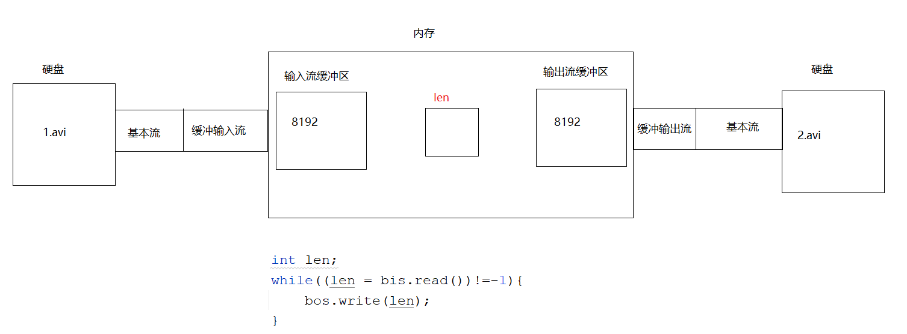
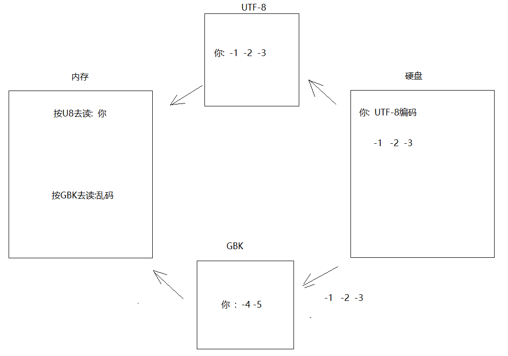
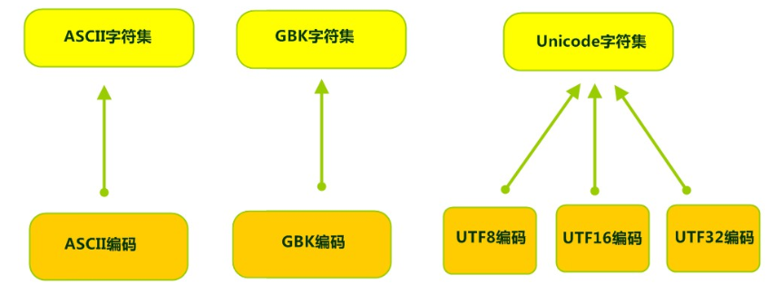
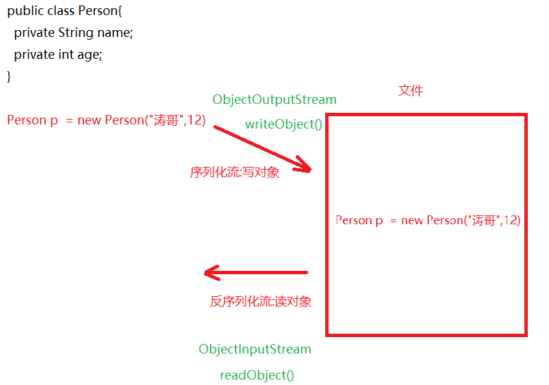
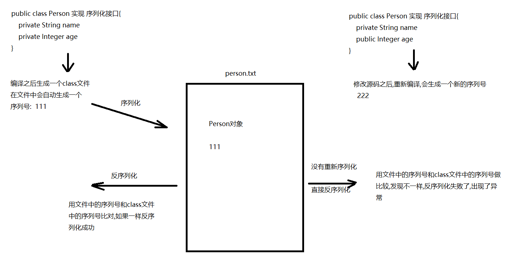
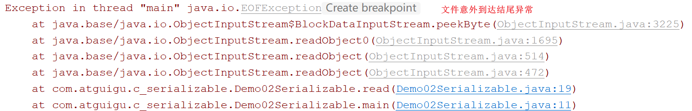
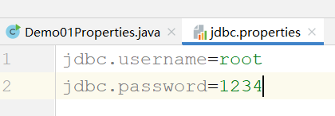
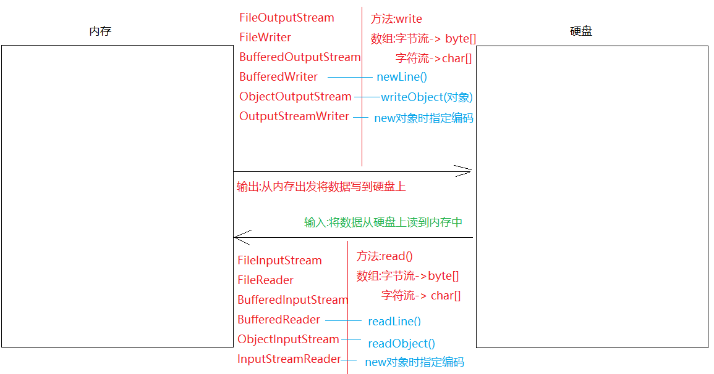

来源：用户提供的 笔记(1).zip / 03_笔记/模块22_IO流/模块22.IO流.md。保留原课程内容，历史环境、示例错误和故意报错的教学代码应结合上下文阅读。
模块22.IO流
模块21回顾:
1.File:代表的是文件或者文件夹对象
2.静态成员:
pathSeparator:获取的是路径和路径之间的分隔符 ;
separator:获取的是路径名称分隔符 \
3.构造:
File(String parent,String child)
File(File parent,String child)
File(String path)
4.获取方法:
getAbsolutePath()获取绝对路径
getPath()获取封装路径
getName()获取文件或者文件夹名称
length()获取文件长度->字节数
5.创建功能:
createNewFile()创建文件
mkdirs()创建文件夹
6.删除功能:
delete()删除文件或者文件夹
7.判断功能:
isDirectory()判断是否为文件夹
isFile()判断是否为文件
exists()判断文件或者文件夹是否存在
8.遍历功能:
list() listFiles()
9.IO流四大基类:抽象类
OutputStream InputStream Writer Reader
10.FileOutputStream:字节输出流
a.构造:
FileOutputStream(File file)
FileOutputStream(String path)
FileOutputStream(String path,boolean append) -> 追加续写
b.方法:
write 写一个字节,一个字节数组,字节数组一部分
close:关流
11.FileInputStream:字节输入流
a.构造:
FileInputStream(File file)
FileInputStream(String path)
b.方法:
read 读一个字节,一个字节数组,一个字节数组一部分
close:关流
12.FileReader:字符输入流
a.构造:
FileReader(File file)
FileReader(String path)
b.方法:
read:一次读一个字符,一个字符数组,一个字符数组一部分
close: 关流
13.FileWriter:字符输出流
a.构造:
FileWriter(File file)
FileWriter(String path)
b.方法:
write 写一个字符,一个字符数组,字符数组一部分,字符串
flush:刷新
close:先刷新后关流
模块22重点:
1.会使用缓冲流:字节和字符
2.会使用转换流
3.会实现序列化接口,以及使用序列化流
4.会使用Properties集合,读取配置文件中的内容
第一章.字节缓冲流
1.为啥要学字节缓冲流
之前所写的FileOutputStream,FileInputStream,FileReader,FileWriter这都叫做基本类,其中FileInputStream和FileOutputStream的读写方法都是本地方法(方法声明上带native),本地方法是和系统以及硬盘打交道的,也就是说这两个对象的读和写都是在硬盘之间进行读写的,效率不高;缓冲流中底层带一个长度为8192的数组(缓冲区),此时读和写都是在内存中完成的(在缓冲区之间完成),内存中的读写效率非常高
使用之前需要将基本流包装成缓冲流,其实就new对象时,传递基本流
2.字节缓冲流
a.BufferedOutputStream:字节缓冲输出流
构造:BufferedOutputStream(OutputStream out)
使用:和FileOutputStream一样
b.BufferedInputStream:字节缓冲输入流
构造:BufferedInputStream(InputStream in)
使用:和FileInputStream一样
public class Demo01BufferedInputStream_OutputStream {
public static void main(String[] args)throws Exception {
//method01();
method02();
}
//使用字节缓冲流复制文件
private static void method02()throws Exception {
long start = System.currentTimeMillis();
FileInputStream fis = new FileInputStream("E:\\Idea\\io\\1.avi");
FileOutputStream fos = new FileOutputStream("E:\\Idea\\io\\2.avi");
BufferedInputStream bis = new BufferedInputStream(fis);
BufferedOutputStream bos = new BufferedOutputStream(fos);
//边读编写
int len;
while((len = bis.read())!=-1){
bos.write(len);
}
long end = System.currentTimeMillis();
System.out.println(end-start);
bos.close();
bis.close();
}
//用基本流复制文件
private static void method01()throws Exception {
long start = System.currentTimeMillis();
FileInputStream fis = new FileInputStream("E:\\Idea\\io\\1.avi");
FileOutputStream fos = new FileOutputStream("E:\\Idea\\io\\2.avi");
//边读编写
int len;
while((len = fis.read())!=-1){
fos.write(len);
}
long end = System.currentTimeMillis();
System.out.println(end-start);
fos.close();
fis.close();
}
}
细节:
问题1:使用缓冲流的时候,为啥只需要关闭缓冲流,不用单独关闭基本流呢?
原因:缓冲流的close方法底层会自动关闭基本流/?
问题2:缓冲流底层有数组(缓冲区),都是在内存之间进行读写,那么缓冲流读写的过程是啥样的呢?
注意:先依靠基本流将数据读出来,然后交给缓冲流,由于缓冲流缓冲区是8192,所以每次读取8192个字节放到缓冲区中,然后再将输入流缓冲区中的数据交给输出流缓冲区,然后再利用基本流将数据写到硬盘上
那么在操作代码时len是干啥的呢?其实主要是在两个缓冲区中倒腾数据,将输入流缓冲区中的数据读到,然后写到输出流缓冲区中,等待输出流缓冲区满了,再依靠基本流写到硬盘上;如果输入流缓冲区中的数据读不到了,重新从硬盘上读8192个字节,进入到输入流缓冲区中,继续利用len在两个缓冲区中来回倒腾数据

第二章.字符缓冲流
我们知道,字符流的基本流底层是有缓冲区的,所以在效率这一块效果不是特别明显,但是不代表不重要,因为我们应该主要学字符缓冲流的两个特有方法
1.字符缓冲输出流_BufferedWriter
1.构造:
BufferedWriter(Writer w)
2.方法:
用起来和FileWriter一样
3.特有方法:
newLine() 换行
public class Demo02BufferedWriter {
public static void main(String[] args)throws Exception {
BufferedWriter bw = new BufferedWriter(new FileWriter("module22\\1.txt",true));
bw.write("床前明月光");
bw.newLine();
bw.write("疑是地上霜");
bw.newLine();
bw.write("举头望明月");
bw.newLine();
bw.write("低头思故乡");
bw.newLine();
bw.close();
}
}
2.字符缓冲输入流_BufferedReader
1.构造:
BufferedReader(Reader r)
2.方法:
用法和FileReader一样
3.特有方法:
String readLine()-> 一次读一行,如果读到结束标记,返回的是null
public class Demo03BufferedReader {
public static void main(String[] args)throws Exception {
BufferedReader br = new BufferedReader(new FileReader("module22\\1.txt"));
/*String s = br.readLine();
System.out.println(s);
String s1 = br.readLine();
System.out.println(s1);
String s2 = br.readLine();
System.out.println(s2);
String s3 = br.readLine();
System.out.println(s3);
String s4 = br.readLine();
System.out.println(s4);*/
//定义一个字符串,接收读取的内容
String line = null;
while((line = br.readLine())!=null){
System.out.println(line);
}
br.close();
}
}
第三章.转换流
1.字符编码
计算机中储存的信息都是用二进制数表示的，而我们在屏幕上看到的数字、英文、标点符号、汉字等字符是二进制数转换之后的结果。[按照某种规则，将字符存储到计算机中，称为编码] 。反之，将存储在计算机中的二进制数按照某种规则解析显示出来，称为解码 。比如说，按照A规则存储，同样按照A规则解析，那么就能显示正确的文本f符号。反之，按照A规则存储，再按照B规则解析，就会导致乱码现象。

- 字符编码
Character Encoding: 就是一套自然语言的字符与二进制数之间的对应规则。
2.字符集
- 字符集
Charset：也叫编码表。是一个系统支持的所有字符的集合，包括各国家文字、标点符号、图形符号、数字等。
计算机要准确的存储和识别各种字符集符号，需要进行字符编码，一套字符集必然至少有一套字符编码。常见字符集有ASCII字符集、GBK字符集、Unicode字符集等。

可见，当指定了编码，它所对应的字符集自然就指定了，所以编码才是我们最终要关心的。
- ASCII字符集 ：
- ASCII（American Standard Code for Information Interchange，美国信息交换标准代码）是基于拉丁字母的一套电脑编码系统，用于显示现代英语，主要包括控制字符（回车键、退格、换行键等）和可显示字符（英文大小写字符、阿拉伯数字和西文符号）。
- 基本的ASCII字符集，使用7位（bits）表示一个字符，共128字符。ASCII的扩展字符集使用8位（bits）表示一个字符，共256字符，方便支持欧洲常用字符。
- ISO-8859-1字符集：
- 拉丁码表，别名Latin-1，用于显示欧洲使用的语言，包括荷兰、丹麦、德语、意大利语、西班牙语等。
- ISO-8859-1使用单字节编码，兼容ASCII编码。
- GBxxx字符集：
- GB就是国标的意思，是为了显示中文而设计的一套字符集。
- GB2312：简体中文码表。一个小于127的字符的意义与原来相同。但两个大于127的字符连在一起时，就表示一个汉字，这样大约可以组合了包含7000多个简体汉字，此外数学符号、罗马希腊的字母、日文的假名们都编进去了，连在ASCII里本来就有的数字、标点、字母都统统重新编了两个字节长的编码，这就是常说的"全角"字符，而原来在127号以下的那些就叫"半角"字符了。
- GBK：最常用的中文码表。是在GB2312标准基础上的扩展规范，使用了双字节编码方案，共收录了21003个汉字，完全兼容GB2312标准，同时支持繁体汉字以及日韩汉字等。
- GB18030：最新的中文码表。收录汉字70244个，采用多字节编码，每个字可以由1个、2个或4个字节组成。支持中国国内少数民族的文字，同时支持繁体汉字以及日韩汉字等。
- Unicode字符集 ：
- Unicode编码系统为表达任意语言的任意字符而设计，是业界的一种标准，也称为统一码、标准万国码。
- 它最多使用4个字节的数字来表达每个字母、符号，或者文字。有三种编码方案，UTF-8、UTF-16和UTF-32。最为常用的UTF-8编码。
- UTF-8编码，可以用来表示Unicode标准中任何字符，它是电子邮件、网页及其他存储或传送文字的应用中，优先采用的编码。互联网工程工作小组（IETF）要求所有互联网协议都必须支持UTF-8编码。所以，我们开发Web应用，也要使用UTF-8编码。它使用一至四个字节为每个字符编码，编码规则：
- 128个US-ASCII字符，只需一个字节编码。
- 拉丁文等字符，需要二个字节编码。
- 大部分常用字（含中文），使用三个字节编码。
- 其他极少使用的Unicode辅助字符，使用四字节编码。
1.想要不乱码,编码和解码遵循的规则(字符编码)要一致 -> 想要不乱码,最重要的是先知道这个字符按照什么编码去存的
2.UTF-8中一个汉字占3个字节
GBK中一个汉字占2个字节
3.转换流_InputStreamReader
1.字节流读取中文在编码一致的情况,也不要边读边看,因为如果字节读不准,读不全,输出的内容有可能会出现乱码
2.所以,我们学了字符流,字符流读取文本文档中的内容如果编码一致,就不会出现乱码问题了
3.但是如果编码不一致,字符流读取文本文档中的内容也有可能出现乱码
1.概述:是字节流通向字符流的桥梁 -> 读数据
2.构造:
InputStreamReader(InputStream in,String charsetName)
charsetName:指定编码,不区分大小写
3.作用:
可以直接指定编码,按照指定的编码去读内容
4.用法:
基本用法和FileReader一样
public class Demo01InputStreamReader {
public static void main(String[] args)throws Exception {
InputStreamReader isr =
new InputStreamReader(new FileInputStream("E:\\Idea\\io\\1.txt"),"gbk");
int data = isr.read();
System.out.println((char)data);
isr.close();
}
}
4.转换流_OutputStreamWriter
1.概述:是字符流通向字节流的桥梁
2.构造:
OutputStreamWriter(OutputStream out,String charsetName)
3.作用:
按照指定的编码规则去存数据
4.用法:
和FileWriter一样
public class Demo02OutputStreamWriter {
public static void main(String[] args)throws Exception {
OutputStreamWriter osw =
new OutputStreamWriter(new FileOutputStream("E:\\Idea\\io\\1.txt"),"gbk");
osw.write("你好");
osw.close();
}
}
第四章.序列化流
一.序列化流和反序列化流介绍
1.作用:读写对象
2.两个对象:
a.ObjectOutputStream -> 序列化流 -> 写对象
b.ObjectInputStream -> 反序列化流 -> 读对象
3.注意:
我们将对象序列化到文件中,我们打开文件看不懂,这就对了,很多时候,我们操作的数据不能随便让别人看懂,不然别人就随意改动了,我们只需要将这些看不懂的内容成功读回来即可
应用场景:比如玩儿游戏会对英雄存档,那么退出的时候英雄变成对象,将人物的属性变成对象的成员变量值,然后存到文件中,再次打开游戏,直接从文件中将这些人物对象读回来,将对象以及对象中的属性还原

二.序列化流_ObjectOutputStream
1.作用:写对象
2.构造:
ObjectOutputStream(OutputStream out)
3.方法:
writeObject(Object obj) -> 写对象
4.注意:
想要将对象序列化到文件中,被序列化的对象需要实现Serializable接口
public class Person implements Serializable {
private String name;
private Integer age;
public Person() {
}
public Person(String name, Integer age) {
this.name = name;
this.age = age;
}
public String getName() {
return name;
}
public void setName(String name) {
this.name = name;
}
public Integer getAge() {
return age;
}
public void setAge(Integer age) {
this.age = age;
}
@Override
public String toString() {
return "Person{" +
"name='" + name + '\'' +
", age=" + age +
'}';
}
}
//序列化
private static void write()throws Exception {
ObjectOutputStream oos =
new ObjectOutputStream(new FileOutputStream("module22\\person.txt"));
Person p1 = new Person("涛哥", 12);
oos.writeObject(p1);
oos.close();
}
三.反序列化_ObjectInputStream
1.作用:读对象
2.构造:
ObjectInputStream(InputStream in)
3.方法:
Object readObject()
private static void read()throws Exception {
ObjectInputStream ois =
new ObjectInputStream(new FileInputStream("module22\\person.txt"));
Person person = (Person) ois.readObject();
System.out.println(person);
ois.close();
}
四.不想被序列化操作(了解)
transient
五.反序列化时出现的问题以及分析以及解决
问题描述:
序列化之后,修改源码,修改完之后没有重新序列化,直接反序列化了,就会出现了序列号冲突问题:
InvalidClassException

解决:将序列号定死,后面不管怎么修改源码,序列号都是这一个
在被序列化的对象中加上一个public static final long 的变量,并为其赋值
public class Person implements Serializable {
public static final long serialVersionUID = 42L;
private String name;
public Integer age;
public Person() {
}
public Person(String name, Integer age) {
this.name = name;
this.age = age;
}
public String getName() {
return name;
}
public void setName(String name) {
this.name = name;
}
public Integer getAge() {
return age;
}
public void setAge(Integer age) {
this.age = age;
}
@Override
public String toString() {
return "Person{" +
"name='" + name + '\'' +
", age=" + age +
'}';
}
}
将一个对象实现一个序列化接口,我们将来才能让这个对象变成二进制,在网络上传输
六.经验问题
1.问题:循环读取的次数和存储对象的个数不对应,就会出现EOFException
2.解决:(涛哥说一种方式,其他方式也有,同学们都想一下还有什么方式)
public class Demo02Serializable {
public static void main(String[] args) throws Exception {
//write();
read();
}
//反序列化流
private static void read() throws Exception {
ObjectInputStream ois =
new ObjectInputStream(new FileInputStream("module22\\person.txt"));
/* for (int i = 0; i < 4; i++) {
Person person = (Person) ois.readObject();
System.out.println(person);
}*/
//将集合反序列化出来即可
ArrayList<Person> list = (ArrayList<Person>) ois.readObject();
for (Person person : list) {
System.out.println(person);
}
ois.close();
}
//序列化
private static void write() throws Exception {
ObjectOutputStream oos =
new ObjectOutputStream(new FileOutputStream("module22\\person.txt"));
//创建一个集合,存储多个Person对象
ArrayList<Person> list = new ArrayList<>();
Person p1 = new Person("涛哥", 12);
Person p2 = new Person("三上", 30);
Person p3 = new Person("金莲", 24);
//将对象存储到集合中
list.add(p1);
list.add(p2);
list.add(p3);
oos.writeObject(list);
oos.close();
}
}

第五章.打印流_PrintStream(了解)
1.PrintStream打印流基本使用
1.构造:
PrintStream(String fileName)
2.方法:
a.println(): 原样输出,自带换行效果
b.print(): 原样输出,不带换行效果
public class Demo01PrintStream {
public static void main(String[] args)throws Exception{
PrintStream ps = new PrintStream("module22\\printstream.txt");
ps.println("涛哥是一个大帅哥");
ps.println("涛哥是一个小鲜肉");
ps.println("涛哥和金莲不为人知的故事");
ps.close();
}
}
改变流向:
1.什么叫做改变流向:
System.out.println()-> 本身是输出到控制台上
改变流向:可以让输出语句从控制台上输出改变成往指定文件中输出
2.方法:System中的方法:
static void setOut(PrintStream out) -> 改变流向 ->让输出语句从控制台输出转移到指定文件中
public class Demo02PrintStream {
public static void main(String[] args)throws Exception{
PrintStream ps = new PrintStream("module22\\log.txt");
//改变流向
System.setOut(ps);
System.out.println("这个错误是今天下午2点出现的");
System.out.println("这个错误是文件意外到达结尾异常");
System.out.println("出现的原因是循环反序列化次数不对");
ps.close();
}
}
使用场景:
可以将输出的内容以及详细信息放到日志文件中,永久保存
以后我们希望将输出的内容永久保存,但是输出语句会将结果输出到控制台上,控制台是临时显示,如果有新的程序运行,新程序的运行结果会覆盖之前的结果,这样无法达到永久保存,到时候我们想看看之前的运行结果信息就看不到了,所以我们需要将输出的结果保存到日志文件中,就可以使用setOut改变流向
2.PrintStream打印流完成续写
PrintStream(OutputStream out) -> 可以依靠OutputStream的续写功能完成打印流续写
public class Demo03PrintStream {
public static void main(String[] args)throws Exception{
PrintStream ps = new PrintStream(new FileOutputStream("module22\\log.txt",true));
//改变流向
System.setOut(ps);
System.out.println("这个错误是今天下午2点出现的");
System.out.println("这个错误是文件意外到达结尾异常");
System.out.println("出现的原因是循环反序列化次数不对");
ps.close();
}
}
第六章.Properties集合
1.Properties结合IO流使用方法
回顾:
1.概述: Properties extends Hashtable
2.特点:
a.无序,无索引
b.key唯一,value可重复
c.线程安全
d.key和value默认类型都是String
3.特有方法:
setProperty(String key,String value) 存键值对
getProperty(String key) -> 根据key获取value
stringPropertyNames()-> 获取所有的key存放到set集合中
load(InputStream in) -> 将流中的数据加载到Properties集合中
public class Demo01Properties {
public static void main(String[] args) {
Properties properties = new Properties();
properties.setProperty("username","root");
properties.setProperty("password","1234");
Set<String> set = properties.stringPropertyNames();
for (String key : set) {
System.out.println(properties.getProperty(key));
}
}
}
使用场景:配合配置文件使用
注意:
将来我们不能将很多的硬数据放到源码中,比如用户名和密码这些数据,因为将来我们有可能换用户名或者密码,如果一换,我们就需要去源码中修改,将来我们的类和类之间都有联系,有可能牵一发动全身,所以我们需要将这些数据提取出来,放到文件中,改的时候直接去文件中改,源码不需要改动
创建配置文件:
1.在模块下右键 -> file -> 取名为xxx.properties
2.在xxx.properties文件中写配置数据
a.key和value都是key=value形式
b.key和value都是String的,但是不要加双引号
c.每个键值对写完之后,需要换行再写下一对
d.键值对之间最好不要有空格(空格可以有,但是不建议写)
e.键值对中建议不要使用中文(中文可以有,但是直接读取会乱码,需要转换流转码)
jdbc.username=root
jdbc.password=1234

public class Demo02Properties {
public static void main(String[] args)throws Exception {
Properties properties = new Properties();
FileInputStream fis = new FileInputStream("module22\\jdbc.properties");
properties.load(fis);
Set<String> set = properties.stringPropertyNames();
for (String key : set) {
System.out.println(key+"..."+properties.getProperty(key));
}
}
}
第七章.Commons-io工具包
一.介绍
IO技术开发中，代码量很大，而且代码的重复率较高。如果我们要遍历目录，拷贝目录就需要使用方法的递归调用，也增大了程序的复杂度。
Apache软件基金会，开发了IO技术的工具类`commonsIO`，大大简化IO开发。
二.添加第三方jar包
1.Apache软件基金会属于第三方(Oracle公司是第一方,我们自己是第二方,其他的都是第三方),我们使用第三方开发出来的工具,都需要添加第三方提供给我们的jar包
2.jar包:本身是一个压缩包,里面转的都是class文件,我们想使用jar包中的工具类,就需要将相应的jar包解压到我们的当前项目下
3.怎么引入jar包
a.在当前模块下创建文件夹,取名为lib或者libs
b.将准备好的jar包,放到此文件夹下
c.对着jar包,右键 -> add as library (如果我们想将lib下所有的jar包一起解压,我们就直接对着lib文件夹右键)
d.level可以选择module,此时上面叫做name的输入框会变成空的,不用管
e.直接点ok
三.工具包的使用
IOUtils类
- 静态方法：IOUtils.copy(InputStream in,OutputStream out)传递字节流，实现文件复制。
- 静态方法：IOUtils.closeQuietly(任意流对象)悄悄的释放资源，自动处理close()方法抛出的异常。
public class Demo01IOUtils {
public static void main(String[] args) /*throws Exception*/{
//- 静态方法：IOUtils.copy(InputStream in,OutputStream out)传递字节流，实现文件复制。
//IOUtils.copy(new FileInputStream("E:\\Idea\\io\\8.jpg"),new FileOutputStream("E:\\Idea\\io\\孝敏.jpg"));
//- 静态方法：IOUtils.closeQuietly(任意流对象)悄悄的释放资源，自动处理close()方法抛出的异常。
FileWriter fw = null;
try{
fw = new FileWriter("module22\\commons.txt");
fw.write("你好");
}catch (Exception e){
e.printStackTrace();
}finally {
if (fw!=null){
IOUtils.closeQuietly(fw);
}
}
}
}
FileUtils类
- 静态方法：FileUtils.copyDirectoryToDirectory(File src,File dest);
传递File类型的目录，进行整个目录的复制，自动进行递归遍历。
参数:
src:要复制的文件夹路径
dest:要将文件夹粘贴到哪里去
- 静态方法：writeStringToFile(File file,String str)写字符串到文本文件中。
- 静态方法：String readFileToString(File file)读取文本文件，返回字符串。
public class Demo02FileUtils {
public static void main(String[] args)throws Exception {
/* - 静态方法：FileUtils.copyDirectoryToDirectory(File src,File dest);
传递File类型的目录，进行整个目录的复制，自动进行递归遍历。
参数:
src:要复制的文件夹路径
dest:要将文件夹粘贴到哪里去*/
//FileUtils.copyDirectoryToDirectory(new File("E:\\Idea\\io\\aa"),new File("E:\\Idea\\io\\cc"));
//- 静态方法：writeStringToFile(File file,String str)写字符串到文本文件中。
//FileUtils.writeStringToFile(new File("module22\\commons.txt"),"haha");
//- 静态方法：String readFileToString(File file)读取文本文件，返回字符串。
String s = FileUtils.readFileToString(new File("module22\\commons.txt"));
System.out.println(s);
}
}
第八章.如何快速记忆IO流
